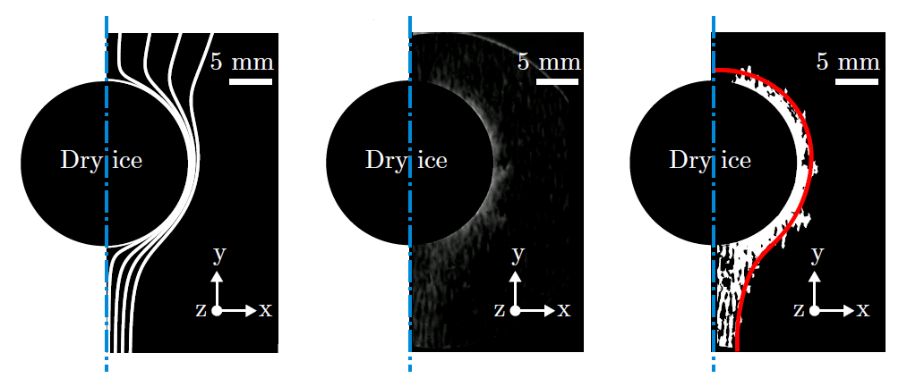
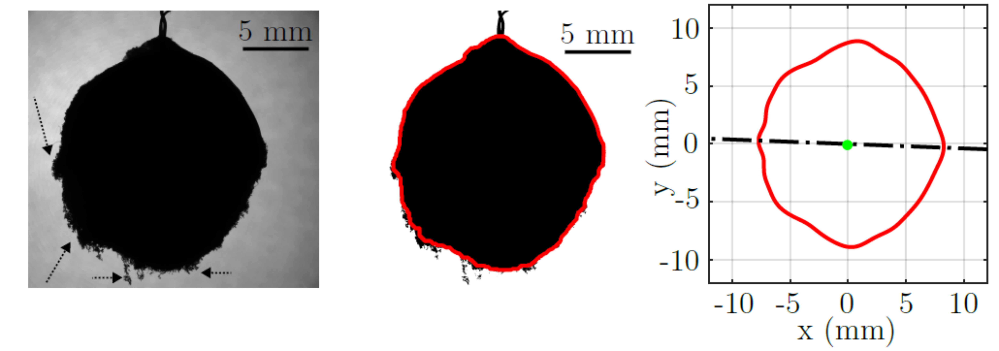
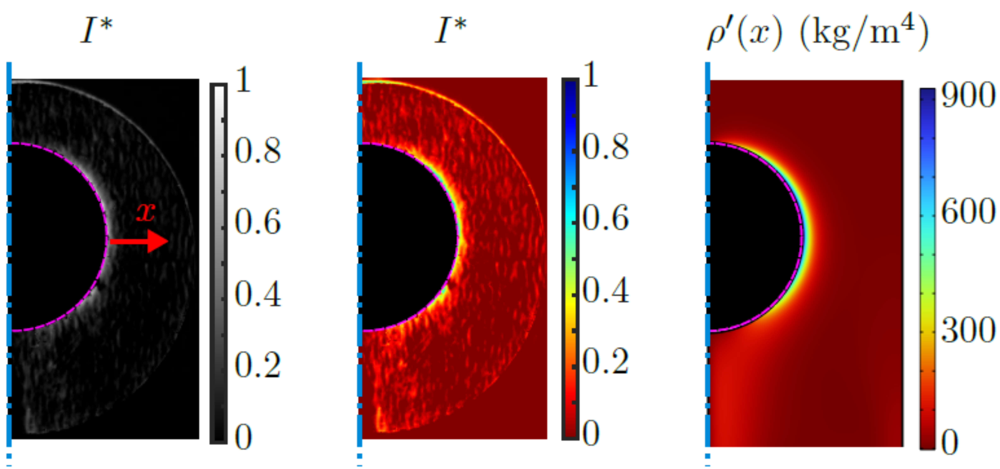
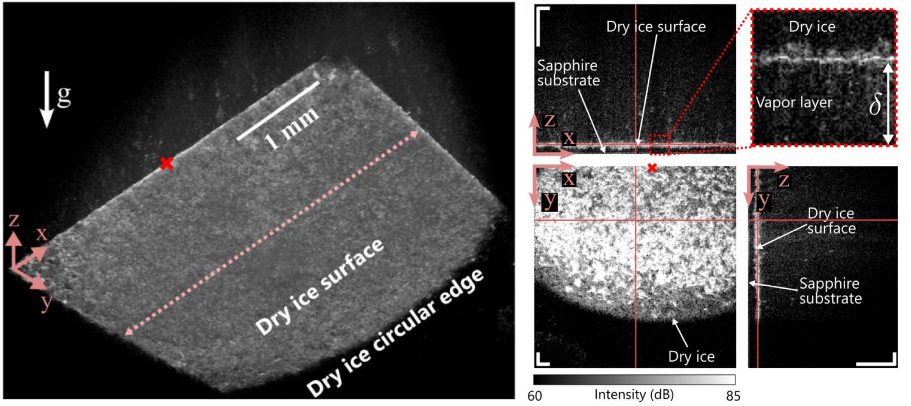
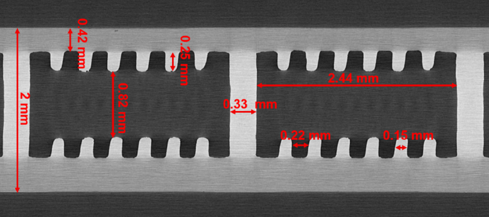
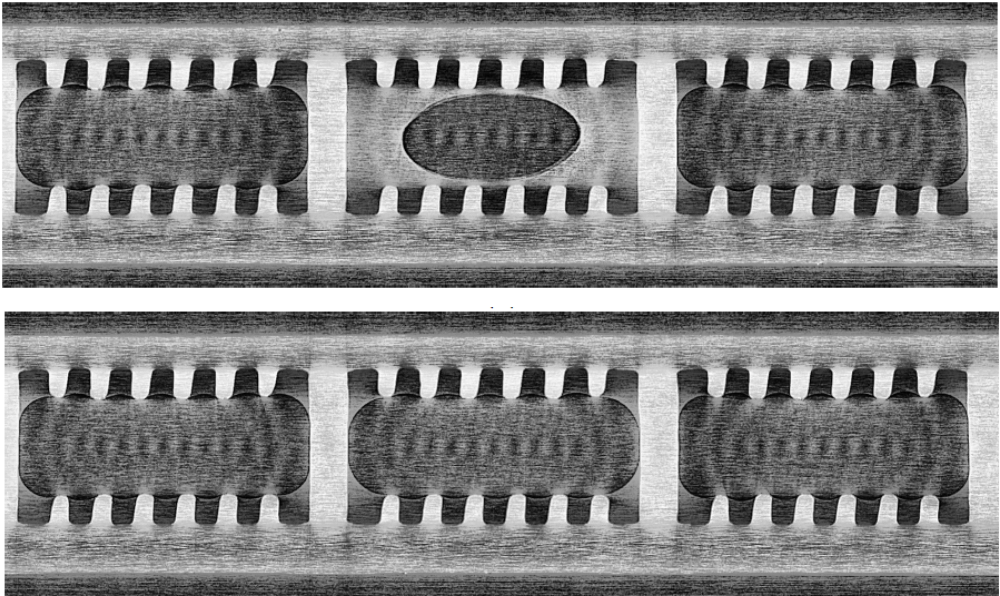
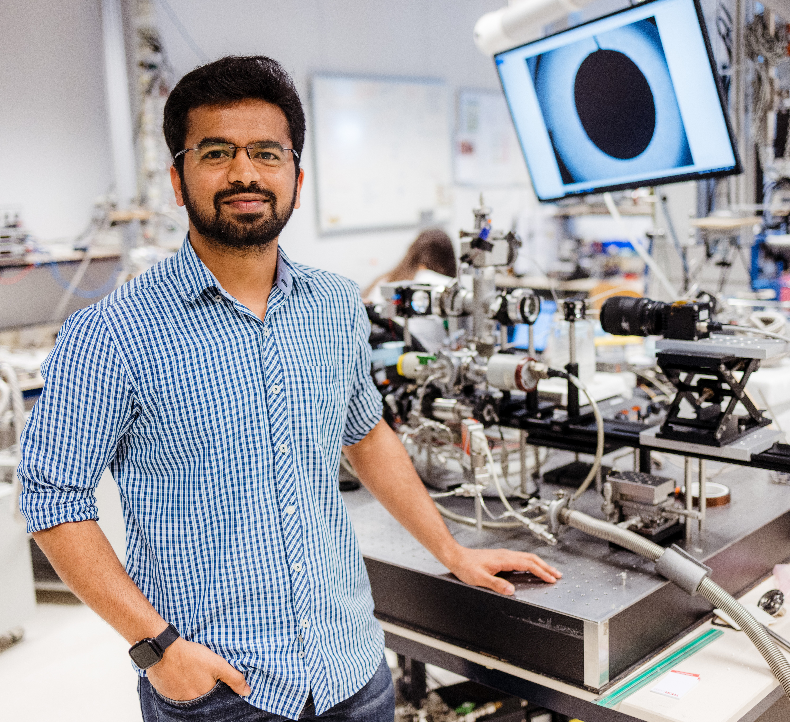
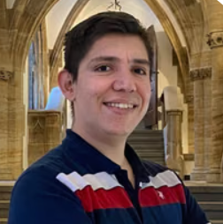

16 September 2026
Dagmar successfully defends her MSc. thesis with cum laude!
Congratulations to Dagmar for defending his thesis titled: Linking meniscus variation to local thermal resistances in flat-grooved heat pipes
Heat Transport & Interfacial Phase-Change Physics







We combine experiments, theory, and numerical modelling to understand the underlying physics of interfacial transport processes.
Our research focuses on heat transfer and fluid flow involving phase changes, with a particular emphasis on CO₂ as a model fluid for investigating transport phenomena across a wide range of temperatures and pressures: from cryogenic solid–vapour transitions to near-critical and supercritical conditions. Through experiments and numerical modelling, we aim to understand the underlying physics of these phenomena and contribute to the development of energy-efficient and sustainable technologies, including cryogenic carbon capture, ultra-low-temperature refrigeration, high-temperature heat pumps, spray cooling, cold-chain logistics, energy storage, and thermal management applications.
We are based in the Thermal Conversion and Storage chair within the Department of Thermal and Fluid Engineering at the University of Twente, where we also actively contribute to research and technology development for heat storage applications.
Congratulations to Dagmar for defending his thesis titled: Linking meniscus variation to local thermal resistances in flat-grooved heat pipes
Dr. Abhishek Purandare has been awarded an NWO Veni grant to investigate the formation of solid CO2 on cold surfaces.
Congratulations to Henriko for defending his thesis titled: Cooling characteristics of supercritical CO2 flow in a tube subjected to extreme heat fluxes
Congratulations to Sergio on receiving the award for his pitch titled: THS Reactor Design Using Novel TCM.
We carried out an industry-funded project focused on the energy and mass balance of an existing cryogenic carbon capture unit.

Principal Investigator · Assistant Professor

PhD Candidate (co-advised with prof. M. Shahi)
MSc. student

MSc. student
MSc. student
The HiPhy Lab welcomes motivated students and researchers interested in heat transfer, fluid mechanics, phase-change physics, cryogenic systems, and energy technologies.
Contact us